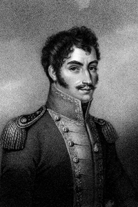
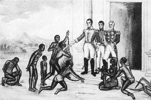

Lezione 15  L’indipendenza dell’America Latina
L’indipendenza dell’America Latina

-
185
500
-
165
450
-
330
530
-
360
510

CARACAS
Nel 1811 il Venezuela dichiara l’indipendenza. Simòn Bolìvar, El libertador, (nell’immagine in un’incisione ottocentesca) forte dell’appoggio economico e navale inglese, guida la rivolta contro le forze spagnole sudamericane. Nel 1811 dichiara l’indipendenza del Venezuela.
COLOMBIA
Simon Bolìvar libera gli schiavi colombiani in illustrazione di gusto quasi naif del pittore ottocentesco Luìs Cancino Fernadez.MONTEVIDEO
José Gervasio Artigas guida la rivolta contro gli spagnoli nella Banda Orientale (futuro Uruguay).BUENOS AIRES
José de San Martìn intraprende la guerra d’indipendenza in Argentina, che nel 1816 al Congresso di Tucumàn viene proclamata libera. San Martìn è anche alla guida del movimento insurrezionale che, dopo una marcia attraverso le Ande, giunge in Cile. Nel 1818 il Cile viene liberato e l’indipendenza viene dichiarata.